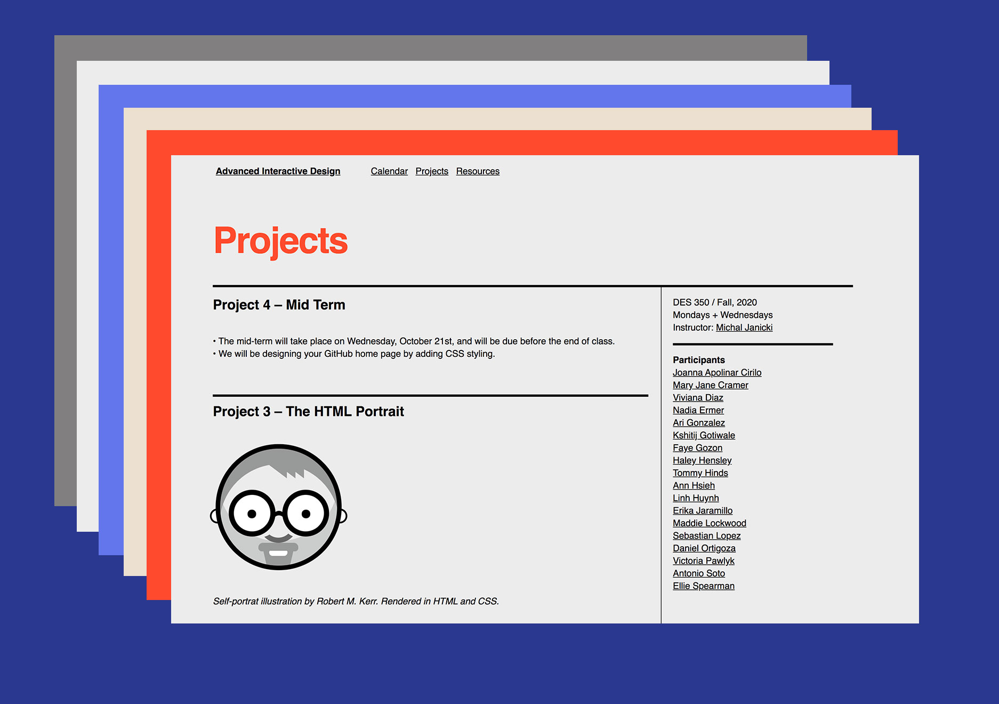
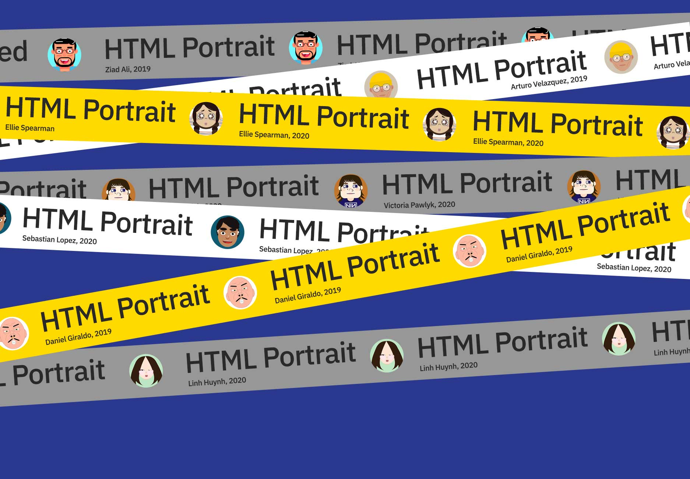
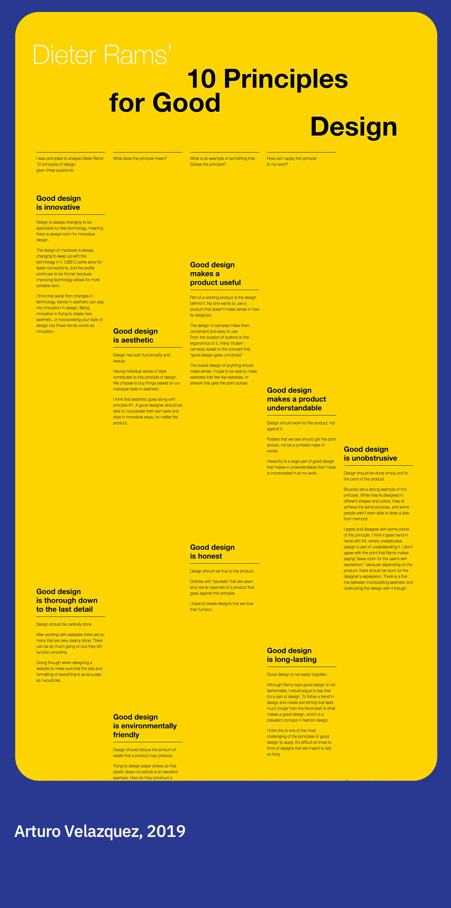
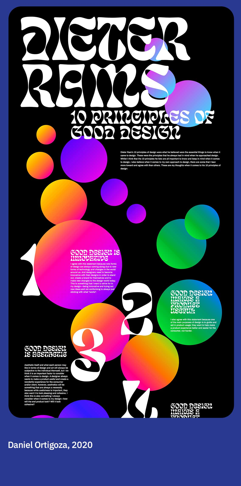
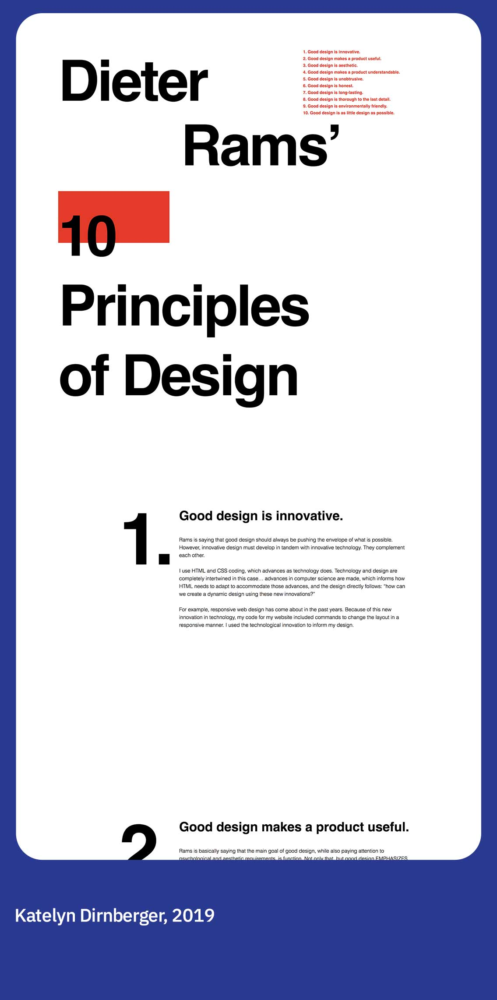
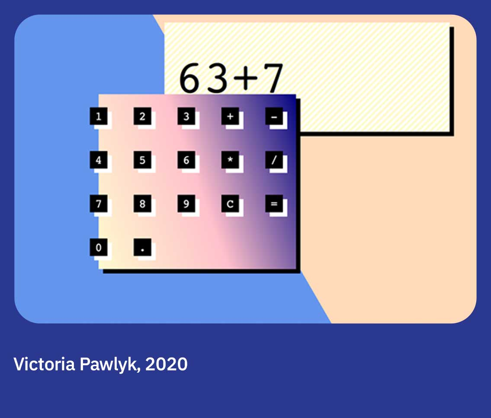
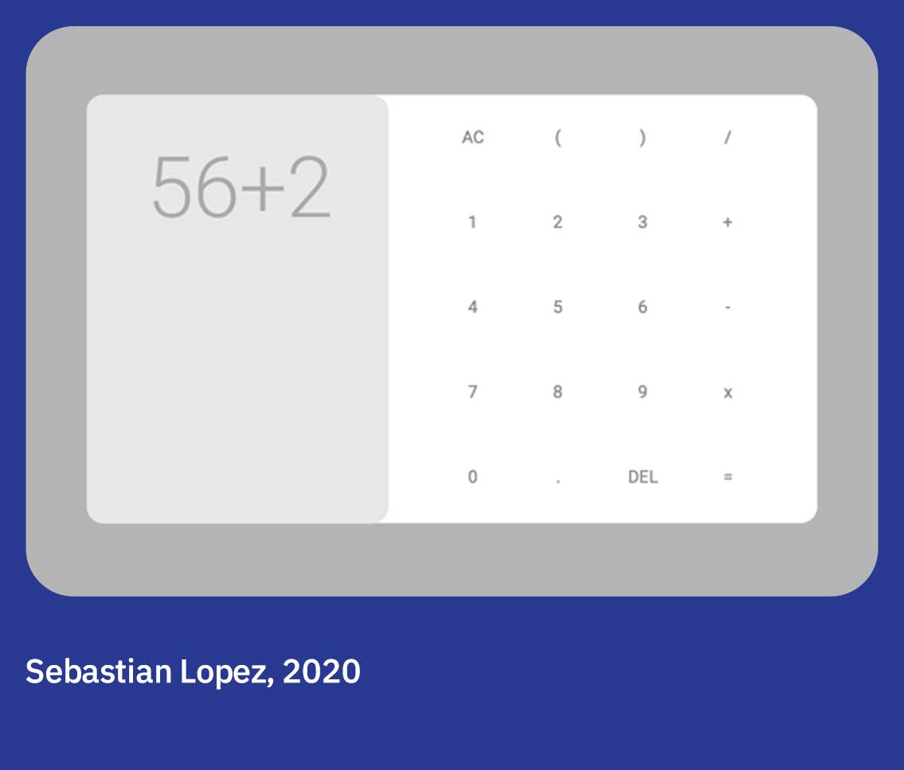
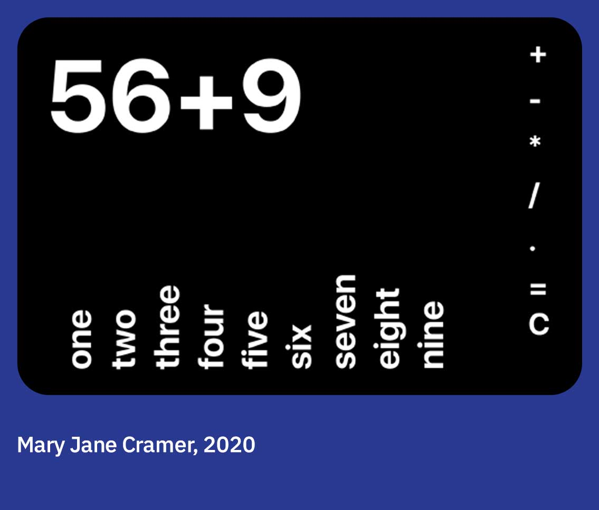
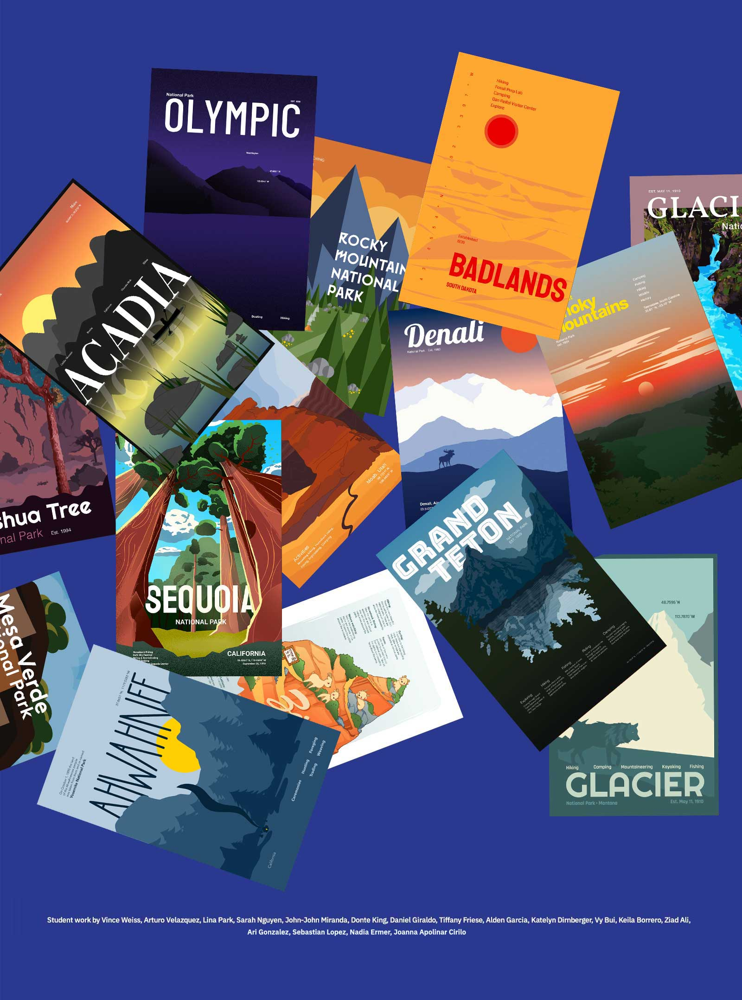

Engaging
remote
learning.
Advanced Digital Design at the
University of Illinois at Chicago.
remote
learning.
Advanced Digital Design at the
University of Illinois at Chicago.
The Challenge
Teaching a digital design class during remote learning at UIC.
Teaching a digital design class during remote learning at UIC.

The Solution
We used programming and graphic design knowledge to drive connection and build portfolios.
We used programming and graphic design knowledge to drive connection and build portfolios.

The class utilized code to create usable and accessible tools, parse data and create digital artifacts.
Responsive digital posters.



Calculator coding and design.



National Parks digital poster and campaign.


Student work shown from the advanced digital design course at
The University of Illinois at Chicago.
Special thanks to guest critics and collaborators Gene Parcellano, Johnny Mei, Robert M. Kerr, Olimpia Gonzalez, Dan Marcus, Denny Liu, and Holly Ulasovich.
Back to main page
The University of Illinois at Chicago.
Special thanks to guest critics and collaborators Gene Parcellano, Johnny Mei, Robert M. Kerr, Olimpia Gonzalez, Dan Marcus, Denny Liu, and Holly Ulasovich.
Back to main page